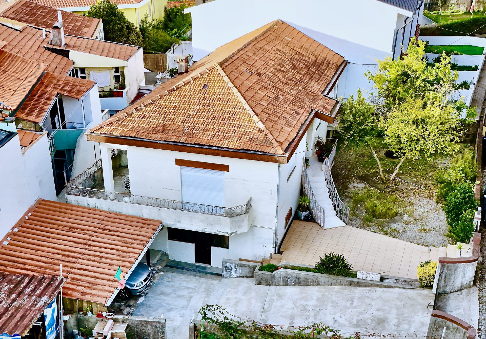

José Bacelar
Consultor imobiliário · CENTURY 21 Arquitectos III · AMI 23921
Fale comigo!
E-mail: josembacelar@century21.pt

Moradia com um T3 e dois T2 independentes, 650 m² de terreno, garagem para 3 carros e jardim com árvores de fruto.
José Bacelar · CENTURY 21 Arquitectos III · AMI 23921 · Ref. C0521-00237
“Viver perto da família, cada um na sua casa. Ou investir com três rendimentos.”
Moradia em propriedade horizontal com três frações independentes, cada uma com o seu artigo matricial: um T3 no piso superior e dois T2 no rés-do-chão. São 236 m² úteis num terreno de 650 m², com garagem para 3 carros, árvores de fruto e espaço para horta. Ideal para famílias que querem viver perto umas das outras, mantendo a privacidade, ou para quem procura um investimento com várias rendas.
No piso superior, um T3 com uma sala ampla e luminosa, duas casas de banho, cozinha, varanda e uma área exterior privada. No rés-do-chão, dois T2 independentes, um deles com lavandaria fechada.
Como cada fração tem o seu artigo matricial, pode viver numa e arrendar as outras, juntar a família sob o mesmo terreno ou vender cada casa em separado.
| T3 · piso superior · sala ampla, varanda e terraço | 3 quartos · 2 WC |
| T2 · rés-do-chão · com lavandaria fechada | 2 quartos · 1 WC |
| T2 · rés-do-chão · independente | 2 quartos · 1 WC |
| Terreno com árvores de fruto e horta | 650 m² |
| Garagem | 3 carros |
De cima percebe-se a dimensão do conjunto: a casa ao centro do lote, o jardim com árvores de fruto, a horta, o pátio e o acesso à garagem, numa rua tranquila da Senhora da Hora.
A escada exterior leva diretamente ao T3, no piso superior, com varanda corrida e terraço. Os dois T2 do rés-do-chão têm entradas independentes pelo pátio.
A casa principal ocupa o piso superior: uma sala grande com janelas largas, cozinha com despensa, três quartos e duas casas de banho, com acesso à varanda e a uma área exterior privada.
Cada T2 tem entrada própria. Um está mobilado e tem lavandaria fechada; o outro está desocupado e pronto a ser renovado ao seu gosto.
À volta da casa, um terreno de 650 m² com árvores de fruto, espaço para horta e um pátio. A garagem leva três carros.
Toque numa fotografia para ampliar. Fotografias e drone Usina Vídeos, tratadas digitalmente para cor e luz.
Farmácia a cerca de 700 m, escola primária a 800 m, metro Senhor de Matosinhos a 1 km, supermercados a 1,5 km, Hospital Pedro Hispano a 1,8 km, praia de Matosinhos, NorteShopping e Parque da Cidade a cerca de 2,5 km, aeroporto a 8 km e centro do Porto a 9 km, segundo a ficha do imóvel.
Abrir no Google Maps · obter direções ↗Três casas independentes num só terreno, na Senhora da Hora, perto do metro, do NorteShopping e do Hospital Pedro Hispano: para juntar a família ou para ter várias rendas.
Marque a sua visita com o José Bacelar e venha conhecer esta moradia.
A CENTURY 21 Arquitectos III apoia na intermediação de crédito habitação: compara propostas de vários bancos, procura as melhores condições para o seu perfil e acompanha todo o processo até à escritura.
Fale diretamente com o José Bacelar e saiba todos os detalhes.
Esta moradia T3+T2+T2 na Senhora da Hora foi apresentada com fotografia profissional, imagens de drone e vídeo-reportagem. O José Bacelar faz o mesmo pelo seu imóvel em Matosinhos, Leça da Palmeira, Maia e Gondomar, do preço certo à escritura.
Estudo de mercado da sua zona e preço de venda ou de renda ajustado à realidade, sem custos.
Fotografia, drone e vídeo-reportagem, divulgados no site, nas redes sociais e nos portais.
Visitas, negociação, crédito do comprador e documentação até à escritura.
Fale diretamente com o consultor José Bacelar.
Consultor imobiliário · CENTURY 21 Arquitectos III · AMI 23921
Fale comigo!
E-mail: josembacelar@century21.pt
Ver o anúncio no site CENTURY 21 (ref. C0521-00237) ↗
Quanto vale a tua casa? Fale comigo.